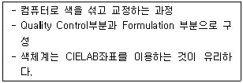
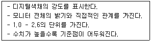
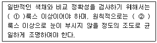

컬러리스트기사 (2005-08-07 기출문제)
1과목: 색채심리 마케팅
1. 다음 중 올바른 내용은?
- 강력한 원색은 피로감이 생기기 쉽고, 자극시간이 길게 느껴진다.
- 한색계통의 엷은색은 피로감이 생기기 쉽고, 자극 시간이 길게 느껴진다.
- 난색계통의 저명도의 색은 진출되어 보인다.
- 한색계통의 저명도의 색은 활기차 보인다.
(정답률: 알수없음)

2. 색채와 능률의 효과와 관련이 없는 것은?
- 신체의 피로 특히 눈의 피로를 덜어준다.
- 정리정돈과 청소가 잘 된다.
- 안전이 유지되고 사고발생이 줄어든다.
- 주의 집중 효과가 떨어진다.
(정답률: 알수없음)
3. 다음 중 시장세분화의 조건으로 옳은 것은?
- 유통가능성, 접근가능성, 실질성, 실행가능성
- 측정가능성, 안전성, 실질성, 실행가능성
- 색채선호성, 계절기후성, 실질성, 실행가능성
- 측정가능성, 접근가능성, 실질성, 실행가능성
(정답률: 알수없음)
4. 색채 선호의 원리를 설명한 것으로 틀린 것은?
- 세계적으로 공통된 선호색 1위는 빨간색이다.
- 색채선호는 문화적, 지역적, 연령별로 차이가 있으나 일반적으로는 공통된 감성이 있다.
- 제품의 색채선호는 고정된 것이 아니라 신소재, 디자인, 유행에 따라 변화한다.
- 남성과 여성의 선호색이 다르므로 구매자의 선호 색채를 사용하면 마케팅 효과가 있다.
(정답률: 알수없음)
5. 색채 조사에 있어 면접원들에게 행하는 사전교육내용 중 옳지 않은 것은?
- 조사의 취지
- 주관적 견해의 전달방법
- 조사목적
- 면접과정의 지침
(정답률: 알수없음)
6. 색채조사에 있어서 조사대상을 직접 방문하여 조사하는 방법을 무엇이라고 하는가?
- 설문지조사
- 전화조사
- 매체조사
- 개별면접조사
(정답률: 알수없음)
7. 마케팅 믹스의 4P에 해당하지 않는 것은?
- 가격(price)
- 유통구조(place)
- 사람(person)
- 판매촉진(promotion)
(정답률: 알수없음)
8. 색채마케팅에서 소비자의 라이프 스타일에 따른 소비자 시장연구의 내용과 거리가 먼 것은?
- 활동(activity)
- 관심(interest)
- 의견(opinion)
- 성격(personality)
(정답률: 알수없음)
9. 색채 치료시 환자가 푸른 방보다 붉은 방에 들어갔을 때 오랫동안 기다리지 못한다. 이런 심리적 현상이 나타나는 이유에 대해 가장 잘 설명한 것은?
- 장파장에서 나타나는 색들이 단파장 보다 더 자극적임
- 혈압이 내려가고 행동이 느려져 더 지루함을 느낌
- 붉은 색을 신경내부를 활발하게 만들어 집중력을 증가시킴
- 붉은 색은 긴장과 해소를 동시에 주고 운동신경의 움직임을 증가시킴
(정답률: 알수없음)
10. 디자인 사조별 색채특성으로 잘못된 것은?
- 미래주의 – 파스텔 톤의 부드러운 색채
- 팝아트 – 도시문화의 단면을 그대로 옮겨 놓으려는 듯한 색채
- 옵아트 – 색채의 원근감을 통한 시각의 일루전(illusion)
- 포토리얼리즘 – 사진과 같은 극명한 구성을 위한 원색적이고 자극적인 색채
(정답률: 알수없음)
11. 표적 마케팅의 단계에 해당하지 않는 것은?
- 시장 세분화
- 시장 표적화
- 시장의 개발
- 시장의 위치선정
(정답률: 알수없음)
12. 다음 기업색채의 선택 요건 중 부적당한 것은?
- 여러 가지 소재로 재연이 용이하고 관리하기 쉬운 색채 요건
- 눈에 띄기 쉽고 타사와의 차별성이 뛰어난 색채 요건
- 기업의 독특한 이미지를 살리기 위한 복잡하고 개성적인 색채 요건
- 기업의 이념과 실체에 맞는 이상적 이미지를 나타내는 색채 요건
(정답률: 알수없음)
13. 동기유발과 관련되어 언급되는 MASLOW의 욕구 5단계 항목이 아닌 것은?
- 생리적 욕구
- 안전 욕구
- 자아실현 욕구
- 학습 욕구
(정답률: 알수없음)
14. 경영전략의 하나로 상표 이미지를 시각적으로 체계화, 단순화하여 소비자에게 인식시키고 체계적인 관리를 통해 특성 브랜드에 대한 선호를 향상시키는 것을 말하는 것은?
- Brand Model
- Brand Royalty
- Brand lmage
- Brand identity
(정답률: 알수없음)
15. 형광등 또는 백열등과 같은 다양한 조명 아래에서도 사과의 빨간색이 달리 지각되지 않는 현상을 무엇이라 하는가?
- 착시
- 색채 항상성
- 색채의 주관성
- 페흐너 효과
(정답률: 알수없음)
16. 다음 선호색에 대한 일반적 경향을 설명한 내용중 가장 잘 못된 것은?
- 자동차 선호색은 각 지역이 자연환경, 온도 및 습도, 생활 패턴 등에 따라 차이가 있다.
- 한국의 경우 대형차는 어두운 색을, 소형차는 경쾌한 색을 선호하는 경향이 있다.
- 동일한 제품이라도 여성용 제품에서는 파스텔 톤의 밝은 색채가 주로 사용된다.
- 제품의 특성에 따라 선호되는 색채는 유행에 따라서 변화되지 않는다.
(정답률: 알수없음)
17. 18, 19세기에 걸쳐 총 3부로 나누어진 [색채론]의 집필을 통해, 인간이 색을 어떻게 느끼며 색에 따라 어떤 정신적 작용을 일으키는가에 대해 탐구하였으며, 현대 색채치료의 시조가 될만한 내용을 서술한 사람은?
- 뉴턴
- 괴테
- 단테
- 피카소
(정답률: 알수없음)
18. 다음은 색채의 영향 중 일반적인 기능적 색채효과로 분류될 수 있는 색채의 특성에 대하여 연결하였다. 내용이 틀린 것은?
- 온도감과 색채 – 색채에는 따뜻한 느낌과 찬 느낌은 주로 색상과 관계가 있다.
- 무게의 판단과 색채 – 명도가 높은 색은 가벼운 느낌을, 명도가 낮은 색은 무거운 느낌을 준다.
- 크기의 판단과 색채 – 일반적으로 같은 크기라도 밝은 색으로 채색된 쪽이 더 크게 보인다.
- 거리의 판단과 색채 – 채도가 높고 명도가 높은 색은 대개 멀게 보이지만 넓이가 커지면 이런 경향은 일치하지 않는다.
(정답률: 알수없음)
19. 색채기호 조사를 통하여 얻을 수 있는 효과가 아닌 것은?
- 소비자의 색채 감성을 정확하게 분석한다.
- 소비자의 색채기호를 유형별로 분석할 수 있다.
- 소비자의 색채기호는 주관적이므로 정량적 분석이 용이하다.
- 소비자의 기호 이미지와 라이프 스타일 분류까지 확장될 수 있다.
(정답률: 알수없음)
20. 21세기 디지털 사회는 디지털을 대표하는 청색을 중심으로 포스트모더니즘의 다양한 복합성을 수용함으로써 테크노 색채와 자연주의 색채를 혼합시킨 색채마케팅을 강조하고 있다. 이러한 색채 마케팅 전략의 영향요인은?
- 인구 통계적 환경
- 기술적 환경
- 경제적 환경
- 역사적 환경
(정답률: 알수없음)
2과목: 색채디자인
21. 에스니컬 디자인(ethnical design), 버네큘러 디자인(vernacular design)의 개념은 다음 중 어떤 디자인의 조건을 충족시키기 위한 것으로 설명될 수 있는가?
- 합목적성
- 독창성
- 질서성
- 문화성
(정답률: 알수없음)
22. 다음 중 색채를 적용할 대상을 검토할 때 고려해야 할 조건들로만 구성된 것은?
- 면적효과, 거리감, 재질감
- 거리감, 면적효과, 조명조건
- 움직임, 조명조건, 재질감
- 공공성의 정도, 시간, 순환성
(정답률: 알수없음)
23. Cl(Corporate ldentity)의 구성 요소가 아닌 것은?
- 심볼 마크(symbol mark)
- 로고타입(logotype)
- 전용 컬러(corporate color)
- 저작권(copyright)
(정답률: 알수없음)
24. 다음 중 비례에 관한 내용이 틀린 것은?
- 좋은 비례의 구성은 즐거운 감정을 느끼게 한다.
- 조형을 구성하는 모든 단위의 크기를 결정한다.
- 주관적 질서와 실험적 근거가 명확하다.
- 파르테논 신전 등은 비례를 이용한 형태이다.
(정답률: 알수없음)
25. 공통요소가 연속적으로 되풀이 되는 율동(rhythm)의 변화에 속하지 않는 것은?
- 반복
- 점이
- 대칭
- 계조
(정답률: 알수없음)
26. 바우하우스의 색채교육 프로그램을 주도한 사람은?
- 헤르만 그레츠
- 요하네스 잇텐
- 피터 베렌스
- 오토 에크만
(정답률: 알수없음)
27. 멀티미디어에 대한 설명이 아닌 것은?
- 송신자와 수신자의 간격을 좁히는 쌍방향 미디어이다.
- 멀티미디어란 움직이는 그림을 의미한다.
- 이미지의 대량복제 및 유포가 가능하다.
- 가상현실을 경험할 수 있게 한다.
(정답률: 알수없음)
28. 안전색채에 대한 설명으로 옳은 것은?
- 안전색채는 한국산업규격(KS) KS A 3501에 의해 규정되어 있다.
- 노랑 – 방사능
- 빨강 – 특정행위의 지시 및 사실의 고지
- 색의 종류 – 빨강, 주황, 노랑, 녹색, 파랑, 보라, 흰색, 회색
(정답률: 알수없음)
29. 점묘법의 병치혼합 기법을 이용하여 색채를 표현한 디자인 사조와 관계가 없는 것은?
- 마티스, 루오
- 인상주의
- 쇠라, 시냑
- 슈브롤
(정답률: 알수없음)
30. 컬러 플래닝 프로세스로 올바른 것은?
- 기획 – 색채설계 – 색채관리 – 색채계획
- 기획 – 색채관리 – 색채계획 – 색채설계
- 기획 – 색채계획 – 색채설계 – 색채관리
- 기획 – 색채설계 – 색채관리 – 색채계획
(정답률: 알수없음)
31. '디자인은 목적 자체가 합리적으로 설정되어야 하고 요구되는 본질적인 쓰임새를 갖추어야 한다.'와 관련이 적은 것은?
- 의자는 인체 공학적으로 인간에게 적절해야 한다.
- 찻잔이 시각적으로 아름답다면 기능상의 불편함은 감수해애 한다.
- 디자이너는 감각, 재료와 생산방식에 대한 지식을 갖추어야 한다.
- 디자이너는 창의적인 감각으로 대중의 공감을 얻는 아름다움을 추구해야 한다.
(정답률: 알수없음)
32. 상품을 선전하고 판매하기 위해 판매현장에서 사용되는 디자인 형태는?
- POP(point of purchase) 디자인
- PG(pictography) 디자인
- HG(holography) 디자인
- TG(typography) 디자인
(정답률: 알수없음)
33. 다음 중 유행색에 대한 설명으로 틀린 것은?
- 어떤 계절이나 일정기간 동안 특별히 많은 사람에 의해 입혀지고 선호도가 높은 색
- 유행예측 색으로 색채전문기관들에 의해 유행할 것으로 예측하는 색
- 패션산업에서는 실 시즌의 약 3개월 전에 유행예측 색이 제안되고 있다.
- 1992년 설립된 한국유행색산업협회가 있어 국제유 행색협회에 공식적으로 참가한다.
(정답률: 알수없음)
34. 온화하고 차분한 느낌을 주는 광고 효과를 위해 반영구적으로 사용하는데 필요한 형식은?
- 유사적 조화
- 균제와 균형
- 비례와 분할
- 대비적 조화
(정답률: 알수없음)
35. 19세기의 미술 공예 운동(Arts and Craft movement)이 일어나게 된 근본 원인은?
- 미술과 공예작품의 가격이 급격하게 하락되었기 때문에
- 기계로 생산된 제품의 질이 현저하게 낮아졌기 때문에
- 미술작품과 공예작품을 구별하기 위해
- 미술가와 공예가의 사회적 위상을 제고시키기 위해
(정답률: 알수없음)
36. 다음 중 디자인의 조형활동을 평가하기 위한 요건과 거리가 가장 먼 것은?
- 디자인의 유기성
- 디자인의 경제성
- 디자인의 합리성
- 디자인의 질서성
(정답률: 알수없음)
37. 메이크 업을 하기 위한 3대 관찰 요소는?
- 이목구비의 비율, 얼굴형, 얼굴의 입체정도
- 시대유행, 의상과의 연관성, 헤어스타일과의 조화
- 비용, 고객의 미적 욕구, 보건 및 위생
- 색의 균형, 피부의 질감, 얼굴의 형태
(정답률: 알수없음)
38. 네덜란드에서 일어난 신조형주의 운동으로, 화면을 정확한 수평, 수직으로 분할하고 3원색과 무채색만을 이용한 구성이 특징인 디자인 사조는?
- 큐비즘
- 드 스틸
- 바우하우스
- 아르데코
(정답률: 알수없음)
39. 디스플레이 디자인(Display Design)에 대한 설명중 잘못된 것은?
- 물건을 공간에 배치, 구성, 연출하여 사람의 시선을 유도하는 강력한 이미지 표현이다.
- 디스플레이의 구성 요소는 상품, 고객, 장소, 시간이다.
- P. O. P(Point of Purchase)는 비상업적 디스플레이에 활용된다.
- 시각 전달 수단으로서의 디스플레이는 사람, 물체, 환경을 상호 연결시킨다.
(정답률: 알수없음)
40. 다음 중 연결이 바르지 않은 것은?
- 곡선 : 자유, 우아, 고상, 불명확, 섬세
- 직선 : 상승, 형식, 도전, 중력, 긴장감
- 절선 : 격동, 불암감, 초조
- 사선 : 무기력 수동적, 우유부단
(정답률: 알수없음)
3과목: 색채관리
41. 입력 장치가 아닌 것은?
- 플로터(Plotter)
- 스캐너(Scanner)
- 타블렛(Tablet)
- 마우스(Mouse)
(정답률: 알수없음)
42. 색료가 선택되면 그 색료를 배합하여 조색 할 수 있는 색채의 범위가 정해진다. 바꾸어 말하면, 색영역은 이론적인 것으로부터 현실적인 단계로 내려 올수록 점점 축소된다. 색영역을 축소시키는 단계를 설명하는 것으로 적절치 않은 것은?
- 주어진 명도에서 가능한 색영역
- 표면반사에 의한 어두운 색의 한계
- 경제성에 의한 한계
- 시간경과에 따른 탈색현상
(정답률: 알수없음)
43. 다음은 무엇에 관한 설명인가?

- CMM
- HSB
- CCM
- RGB
(정답률: 알수없음)
44. 다음 중 육안 검색시 측정 광원의 기준이 되는 것은?
- 표준광원 A
- 표준광원 B
- 표준광원 D65
- 표준광원 C 또는 형광등
(정답률: 알수없음)
45. 육안검색시 유의사항 중 맞는 것은?
- 관찰자는 색채 경험이 많이 있는 사람만 해야 한다.
- 높은 채도에서 낮은 채도의 순서로 검사하는 것이 좋다.
- 마스크를 사용할 때는 비교색에 가장 보색인 채도를 가진 것으로 한다.
- 마스크는 광택이나 형광이 없는 무채색이 좋다.
(정답률: 알수없음)
46. 색채가 선명하지는 않으나 우아하고 독특한 색채를 보여줌으로써 고급품의 섬유염색에 이용되고 있는 염료는?
- 직접염료
- 식용염료
- 형광염료
- 천연염료
(정답률: 알수없음)
47. 디지털 색채관리와 관련된 다음 내용은 무엇을 설명하는 것인가?

- Gamma
- HSB 시스템
- CRT
- Gamut
(정답률: 알수없음)
48. 한국산업규격(KS)에서 채용하고 있는 색채표시체계가 아닌 것은?
- CIE XYZ
- Munsell system
- NCS. PCCS
- CIE LAB
(정답률: 알수없음)
49. 다음 중 형광을 포함한 분광반사율을 측정하는 방법이 아닌 것은?
- 다중각(multiangle) 측정법
- 필터감소법(filter reduction method)
- 이중 모드법(two-mode method)
- 이중 모노크로메이터법(two-monochromator method)
(정답률: 알수없음)
50. 다음은 육안 조색시 오차를 판정하는 기준들이다. 잘못된 것은?
- 개략적인 샘플의 오차는 대부분 △E*ab≤1 이다.
- 정밀한 샘플의 오차의 경우 △E*ab≤0.5를 기준으로 한다.
- 기준광은 표준광 A이고 도막의 두께는 건조후 500㎛를 적용한다.
- 색차오차 표기는 △E*ab가 가장 일반적이다.
(정답률: 알수없음)
51. 다음은 색채 소재에 관한 설명이다. 맞는 것은?
- 플라스틱소재 - 투명도가 낮아 유리와 같이 투명 재료로 사용하기 어려운 반면 굴절율은 높다.
- 금속소재 - 화학적 착색 방법인 아노다이징(anodiging)방식을 사용하여 금속표면을 착색하기도 한다.
- 천연섬유소재 - 염착성이 매우 좋지않은 결점을 가지고 있다.
- 합성섬유소재 - 폴리에스테르와 같은 합성섬유는 염색 할 때 저온에서 단시간내에 하므로 염착성이 좋다.
(정답률: 알수없음)
52. ( )안의 내용으로 가장 적합한 것은?

- ① 500, ② 1,000
- ① 1,000, ② 2,000
- ① 500, ② 2,000
- ① 1,000, ② 500
(정답률: 알수없음)
53. 다음 전자장비 중 사용하는 색체계가 일반적으로 다른 것은?
- 디지털 카메라
- 스캐너
- 컴퓨터 모니터
- 컬러프린터
(정답률: 알수없음)
54. 입출력 시스템들은 각 장치의 특성과 설정에 따라 색이 서로 다르게 보여지는 경우가 있다. 이러한 경우, 색온도, 감마컬러 및 기타 특성 등을 조절하여 색상이 일정한 표준으로 나타나도록 하는 데, 이 과정을 무엇이라고 하는가?
- Color gamut mapping
- Calibration
- Color Management Module
- Computer Color Matching System
(정답률: 알수없음)
55. 색채 영역과 혼색방법에 관한 설명이다. 틀린 것은?
- 모니터 화면의 형광체들은 가법혼색의 주색의 특징에 따라 선별된 형광체를 사용한다.
- 감법혼색은 각 주색의 파장영역이 좁을수록 색역이 확장된다.
- 컬러프린터의 발색은 병치혼색과 감법혼색을 같이 활용한 것이다.
- 감법혼색에서 시안(Cyan)은 600nm 이후의 빨강색 영역의 반사율을 효과적으로 감소시킨다.
(정답률: 알수없음)
56. 측색 측정방식에 대한 설명 중 맞는 것은?
- 측색의 결과는 빛이 입사하는 각도와 관찰자의 보는 방향에 관계없이 항상 일정하게 나타난다.
- CIE에서는 빛의 입사 및 관측 방향의 측정방식을 나타낼 때에는 [입사각의 각도]/[직사광 측정자의 각도]로 나타낸다.
- 45/0 측정 방식과 0/45 측정방식은 그 결과가 서로 같다.
- d/0 측정방식과 0/d 측정방식은 그 결과가 서로 다르다.
(정답률: 알수없음)
57. 분광측색방법에서 3자극치의 계산 방법의 하나로, 분광측정치(상대 분광분포, 분광 입체각 반사율 등)를 정해진 부등간격에 파장에 대하여 알고 이것을 더하고 다시 계수를 곱하여 3자극치를 계산하는 방법은?
- 선정파장방법
- 등간격파장방법
- 헌터의 색차식 직독법
- 애덤스-니커슨 색차식법
(정답률: 알수없음)
58. 색변이지수(CII : Color Inconstancy Index)가 높은 색에 대하여 가장 잘 설명한 것은?
- 빛이나 세탁에 색이 잘 변한다.
- 색변이지수가 높을수록 고품질의 색채이다.
- 광원에 따라 색채가 많이 변하는 색이다.
- 색의 제조가격이 가장 경제적인 경우의 색이다.
(정답률: 알수없음)
59. CIE 1960 UCS 색도 그림 위에서 완전 방사체 궤적에 직교하는 직선 또는 이것을 다른 적당한 색도 그림 위에 변환 시킨 것은?
- 방사 휘도율
- 입체각 반사율
- 등색온도선
- V(λ)곡선
(정답률: 알수없음)
60. 다음 설명 중 정확한 색채 측정을 위한 백색 기준물(White reference)의 설명으로 옳지 않은 것은?
- 필터식 색채계의 경우 백색기준물의 색좌표를 기준으로 색채를 측정한다.
- 분광식 색채계에서의 백색기준물은 분광흡수율을 기준으로 한다.
- 백색기준을 자체는 색이 변하면 측정값들도 직접적인 영향을 받게 된다.
- 백색기준물은 정기적으로 교정기관에서 교정을 받는 것이 좋다.
(정답률: 알수없음)
4과목: 색채지각론
61. 어두운 밤에 희미한 별을 잘 보기 위해서는 어떤 방식으로 관찰하는 것이 좋은가?
- 먼 불빛을 응시하여, 눈의 초점이 원거리에 잘 적응된 후에 관찰한다.
- 눈을 한참 감고 있다가 어두운 환경에 잘 순응된 후에 눈을 가늘게 뜨고 관찰한다.
- 찾고자 하는 별을 정면으로 응시하지 말고, 약간 벗어난 주변을 바라보면서 관찰한다.
- 찾고자 하는 별을 정면으로 바라보며 눈을 자주 깜빡이면서 관찰한다.
(정답률: 알수없음)
62. 빨간색의 사각형을 주시하다가 노랑 배경을 보면 순간적으로 어떤 색으로 보이는가?
- 연두 띤 노랑
- 주황 띤 노랑
- 검정 띤 노랑
- 보라 띤 노랑
(정답률: 알수없음)
63. 색의 무게감에 가장 큰 영향을 미치는 속성은?
- 명도
- 채도
- 색상
- 질감
(정답률: 알수없음)
64. 모리스 데레베레(Maurice Deribere)의 색과 향의 관계가 바르게 연결된 것은?
- camphor 향 : light blue
- musk 향 : green
- mint 향 : red - brown, golden yellow
- floral 향 : rose
(정답률: 알수없음)
65. 다음에 나타난 혼색이 잘못된 것은?
- 수채화 물감에서 Magenta + Yellow = Red
- 포스터 컬러에서 Magenta + Green = Blue
- 조명에서 Blue + Green = Cyan
- 색필터에서 Red + Green = Yellow
(정답률: 알수없음)
66. 다음 중에서 가장 후퇴해 보이는 것은?
- 고명도의 난색
- 저명도의 난색
- 고명도의 한색
- 저명도의 한색
(정답률: 알수없음)
67. 경주용 자동차 경기에서 상대편을 심리적으로 위축시키기 위하여 자동차의 색을 속도감이 높아 보이게 만들려고 한다. 다음 중 가장 적합한 색은?
- 장파장색으로 명도가 높고 채도가 낮은 색
- 단파장색으로 명도와 채도가 높은 색
- 장파장색으로 명도와 채도가 높은색
- 단파장색으로 명도가 높고 채도가 낮은 색
(정답률: 알수없음)
68. 양복지와 같은 직물에서는 몇 가지 색실로 다양한 색상을 만들어 내고 있다. 이에 관련된 혼색방법이 아닌 것은?
- 가법혼색
- 감법혼색
- 병치혼색
- 중간혼색
(정답률: 알수없음)
69. 청록과 노랑으로 구성된 그림을 집중해서 보다가 흰 벽을 쳐다보면 잔상이 나타난다. 이 때 보여지는 잔상의 색은?
- 시안과 노랑
- 빨강과 파랑
- 주황과 녹색
- 자주와 보라
(정답률: 알수없음)
70. 그림처럼 교차하는 검정사각형 사이로 회색잔상이 보이는 대비효과를 무엇이라 하는가?
- 베졸드 효과
- 하만 그리드 효과
- 잔상효과
- 착시현상
(정답률: 알수없음)
71. 인간이 볼 수 있는 가시광선의 파장 범위는?
- 200nm ~ 500nm
- 380nm ~ 600nm
- 380nm ~ 780nm
- 500nm ~ 780nm
(정답률: 알수없음)
72. 눈에 보이는 모든 면적이 빨강으로만 되어있는 벽면을 볼 경우, 처음에는 빨강으로 보이나 어느 정도 시간이 경과하여 색순응이 일어나면 빨강은 어떠한 색으로 보이는가?
- 어두운 적색
- 어두운 녹색
- 어두운 청색
- 어두운 회색
(정답률: 알수없음)
73. 다음 중 채도대비에 대한 설명으로 틀린 것은?
- 채도가 다른 두 색을 인접했을 때, 채도가 높은 색의 채도는 더욱 높아진다.
- 채도대비가 나타날 때 인접된 색은 서로 더욱 선명해진다.
- 동일한 색인 경우, 고채도의 바탕에 놓았을 때 보다 저채도의 바탕에 놓았을 때 색이 더 탁해 보인다.
- 채도대비는 유채색과 무채색 사이에서 더욱 뚜렷이 느껴진다.
(정답률: 알수없음)
74. 유리병 속의 액체나 얼음 덩어리의 색은 어떤 색의 분류에 속하는가?
- 경영색
- 표면색
- 공간색
- 간섭색
(정답률: 알수없음)
75. 푸르킨예(Purkinje)현상과 관련이 없는 것은?
- 간상체 시각과 추상체 시각의 스펙트럼 민감도가 서로 다르기 때문이다.
- 어두운 곳에서는 빨강색의 물체보다도 파랑색의 물체가 더 잘 보인다.
- 간상체가 단파장 빛에 민감하기 때문에 생기는 현상이다.
- 간상체의 시각이 망막의 위치마다 민감도가 다르기 때문에 생기는 현상이다.
(정답률: 알수없음)
76. 세 단계의 무채색을 서로 이웃하여 놓았을 때, 색의 경계부분에서 강하게 일어나는 대비현상은?
- 색상대비
- 연변대비
- 채도대비
- 명도대비
(정답률: 알수없음)
77. 무채색과 유채색을 대비시켰을 때 관련이 없는 것은?
- 명도대비
- 색상대비
- 채도대비
- 동시대비
(정답률: 알수없음)
78. 동시대비에 관한 설명으로 맞는 것은?
- 색차가 클수록 대비현상은 약해진다.
- 자극과 자극 사이의 거리가 가까울수록 대비현상은 약해진다.
- 자극을 부여하는 크기가 클수록 대비의 효과가 커진다.
- 시점을 한 곳에 집중시키려는 색채지각 과정에서 일어나는 현상이다.
(정답률: 알수없음)
79. 다음 중 차가운 색에 속하지 않는 것은?
- 노랑
- 파랑
- 남색
- 청록
(정답률: 알수없음)
80. 다음에서 심리적으로 흥분감을 유도하는 색은?
- 한색계열의 고채도 색
- 한색계열의 저채도 색
- 난색계열의 고채도 색
- 난색계열의 저채도 색
(정답률: 알수없음)
5과목: 색채체계론
81. CIE표색계에서 나타내고 있는 사항이 아닌 것은?
- 실존하는 모든 색을 나타낸다.
- 백색광은 색도도의 중앙에 위치한다.
- 색도도 안에 있는 한 점은 순색을 나타낸다.
- 색도도 내의 임의의 세 점을 잇는 3각형 속에는 세 점에 있는 색을 혼합하여 생기는 모든 색이 들어있다.
(정답률: 알수없음)
82. 오스트발트 색체계의 활용에 있어 장점이 아닌 것은?
- 동일 색조의 색들을 쉽게 찾을 수 있다.
- 표시된 기호로 색의 직관적 연상이 가능하다.
- 안료 제조시 정량 조제에 응용이 가능하다.
- 색배열의 위치로 조화되는 색을 찾기 쉬워 디자인 색채 계획에 활용하기 적합하다.
(정답률: 알수없음)
83. 관용 색명에 관한 설명 중 잘못된 것은?
- 색을 언어로 표시하는 하나의 방법이다.
- 감정의 전달, 기억, 연상이 편리하다.
- 정확성을 가지는 반면, 일상생활에서는 이해하기는 어렵다.
- 예로부터 전해 내려오면서 습관상으로 사용하는 색 하나하나의 고유 색명을 말한다.
(정답률: 알수없음)
84. 색채표준의 조건이 아닌 것은?
- 특수 안료로의 재현 용이성
- 색채간의 지각적 등보성
- 색채 배열의 과학적 근거
- 해독 가능성 및 실용성
(정답률: 알수없음)
85. 색채조화의 공통원리가 아닌 것은?
- 대비의 원리 (Principle of Contrast)
- 질서의 원리 (Principle of Order)
- 명료의 원리 (Principle of unambiguity)
- 제2 불명료의 원리 (Principle of ambiguity)
(정답률: 알수없음)
86. KS A 0012 : 광원의 관용색 이름이 아닌 것은?
- 달빛색
- 호박색
- 녹백색
- 산호색
(정답률: 알수없음)
87. 전통 방위색과 상징으로 맞는 것은?
- 黃色 - 중앙 : 가을, 황룡(黃龍), 인(仁)
- 靑色 - 동쪽 : 겨울, 백호(白虎), 의(義)
- 赤色 - 남쪽 : 여름, 주작(朱雀), 예(禮)
- 白色 - 서쪽 : 봄, 현무(玄武), 지(智)
(정답률: 알수없음)
88. 다음 중 먼셀 표색계 설명으로 틀린 것은?
- 먼셀표색계를 “색의 3삼속에 의한 방법” 이라는 제목으로 한국산업규격 (KS A 0062)에 채택하였다.
- 물체색의 색감각 3속성으로 색상, 명도, 채도로 나누었다.
- 빛을 흡수하는 흑색(B)과 빛을 반사하는 백색(W)과 파장영역을 완전히 흡수하는 이상적인 순색(C)으로 나눈다.
- 먼셀기호를 표기할 때는 HV/C 순서로 표기한다.
(정답률: 알수없음)
89. 아래 그림의 오스트발트 색채계에서 보여지는 조화로 맞는 것은?
- 등백색 계열의 조화
- 등흑색 계열의 조화
- 등순색 계열의 조화
- 등색상의 조화
(정답률: 알수없음)
90. 비렌의 색채조화원리에 해당하지 않는 것은?
- WHITE - GRAY - BLACK
- COLOR - SHADE - BLACK
- SHADE - TONE - GRAY
- COLOR - WHITE - BLACK
(정답률: 알수없음)
91. 다음 중 CIE Lab 표색계에 대한 설명으로 잘못된것은?
- a*와 b*는 색 방향을 나타낸다.
- L* = 50은 gray이다.
- a* 는 red - green 축에 관계된다.
- b* 는 밝기의 척도이다.
(정답률: 알수없음)
92. 한국산업규격에서 유채색의 수식 형용사가 아닌것은?
- 선명한(vivid)
- 짙은(deep)
- 탁한(dull)
- 어두운(dark)
(정답률: 알수없음)
93. 1976년에 국제조명위원회에서 XYZ표색계의 단점을 보완하여 발표한 표색계는?
- CIE 표색계
- CIE L*a*b*
- DIN
- NCS
(정답률: 알수없음)
94. 독일공업규격으로 색상(T), 포화도(S), 암도(D)로 표현하며, 색상을 주파장으로 정의하는 것이나 24로 분할한 것이 오스트발트 표색계와 유사한 표색계는 다음 중 어느 것인가?
- NCS
- DIN
- RAL
- JIS
(정답률: 알수없음)
95. 1916년에 발표된 오스트발트 표색계의 바탕이 된 색지각설은?
- 하트리지(H. Hartidge)의 다색설
- 영 ㆍ 헬름홀쯔(Yoing ㆍ Helmholtz)의 3원색설
- 헤링(E. Hering)의 반대색설
- 돈더스(F. Donders)의 단계설
(정답률: 알수없음)
96. 적통색명 중 적색계가 아닌 것은?
- 적토(赤土)
- 휴색(烋色)
- 장단(長丹)
- 치자색(梔子色)
(정답률: 알수없음)
97. 다음 중 먼셀 색체계의 설명으로 옳은 것은?
- 먼셀 밸류라고 불리는 명도(V)축은 번호가 증가하면 물리적 밝기가 감소하여 검정이 된다.
- Gray Scale은 명도단계를 뜻하며, 자연색이라는 영문의 앞자를 따서 M1, M2, M3...로 표시한다.
- H V/C : V에 해당되는 수치가 같은 유채색과 무채색은 채도가 동일하다.
- 실용상 현재 쓰이고 있는 먼셀 색상환은 20색상과 40색상의 색상환이다.
(정답률: 알수없음)
98. 오스트발트 색채조화원리 중 등가색환의 조화와 관련없는 것은?
- 색입체를 수평 절단하면 백색량, 흑색량이 같은 28개 등가색환이 된다.
- 등가색환은 색상번호 이외의 기호가 같은 것으로 모두 28색상이 된다.
- 색상 간격이 2~4인 배색을 유사색 조화라고 한다.
- 색상환에서 중심에 대하여 반대의 위치에 있는 보색대의 배색을 반대색 조화라고 한다.
(정답률: 알수없음)
99. ISCC-NBS 색명체계에 대한 설명으로 옳지 않은 것은?
- 전미 색채협의회와 미국 국가표준국이 공동으로 연구 발표 한 것이다.
- 1955년에 '색이름 사전' 을 발간함으로서 오늘날 세계 여러 나라의 색이름 기준이 되고 있다.
- 한국산업규격(KS) 색이름의 기준이 된다.
- 10개의 기본색상 이름과 10개의 보조색상이름을 사용하여 총 20색상명을 가지고 있다.
(정답률: 알수없음)
100. NCS에 대한 설명으로 틀린 것은?
- 스웨덴 색채연구소에서 만들었다.
- 헤링의 이론을 바탕으로 한다.
- 색삼각형은 검정색도, 하양색도, 유채색도를 설명한다.
- NCS 색상환의 4가지 기본색은 Y, R, V, G 이다.
(정답률: 알수없음)